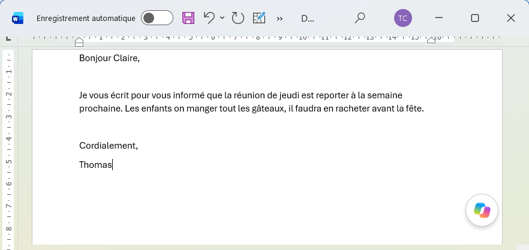
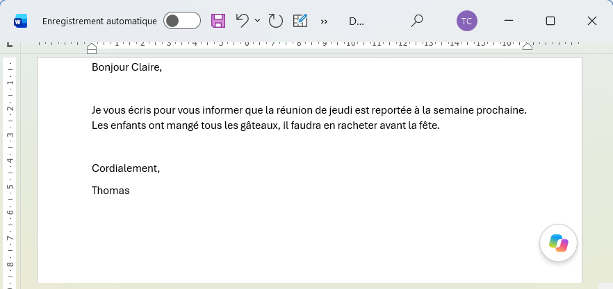

Corrigez vos textes d'une touche.
Sans internet.
Sélectionnez un texte dans Word, Outlook ou votre navigateur, appuyez sur F2 : il est corrigé sur place. L'IA tourne sur votre ordinateur, rien ne part sur internet.
Télécharger pour Windows gratuit · sans installation · sans compte

Comment ça marche
Lancez FKey
Il attend dans la zone de notification, près de l'horloge.
Sélectionnez un texte
Dans n'importe quelle application : un mot, une phrase, un mail entier.
Appuyez sur une touche
Le texte est remplacé par le résultat. Le presse-papiers est préservé.
L'application

- Prêt en deux minutesAu premier lancement, un assistant télécharge le modèle recommandé (≈ 3 Go, une seule fois).
- RéglableTouches, langue de traduction, modèle, lancement avec Windows.
- 100 % privéPas de compte, pas de serveur. Vos textes ne quittent jamais l'ordinateur ; fonctionne hors ligne.
Télécharger FKey v1.0.1
Archive portable : décompressez, lancez, c'est tout.
⬇ FKey-portable.zip 37 Mo · Windows 10/11 64 bits- 1Décompressez le dossier où vous voulez.
- 2Lancez FKey.exe et suivez l'assistant.
- 3Sélectionnez un texte, appuyez sur F2.
Questions fréquentes
Quelle configuration faut-il ?
Windows 10 ou 11 en 64 bits, 8 Go de mémoire vive recommandés (le modèle en occupe environ 2,7 Go) et 4 Go d'espace disque. Pas de carte graphique nécessaire.
Ça marche vraiment sans internet ?
Oui. Une connexion n'est nécessaire qu'une fois, pour télécharger le modèle. Ensuite tout fonctionne hors ligne.
Windows affiche un avertissement au lancement
FKey n'est pas encore signé numériquement. Cliquez sur « Informations complémentaires » puis « Exécuter quand même ». Le code source est public.
Comment désinstaller ?
Quittez FKey depuis la zone de notification et supprimez le dossier. Si le lancement automatique était activé, désactivez-le d'abord dans Réglages.